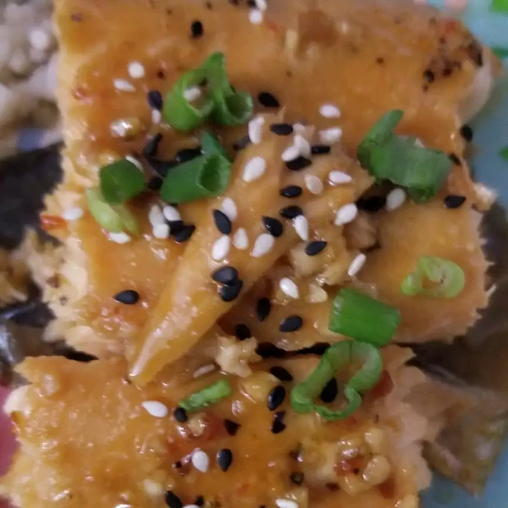

Asian Salmon

Asian Salmon Recipe
Make several shallow slashes in the skinless side of the salmon fillets. Place fillets skin-side down in a glass baking dish. In a medium bowl, whisk together the olive oil, rice vinegar, soy sauce, brown sugar, garlic, pepper, onion and sesame oil. Pour the liquid over the salmon, cover, and refrigerate for 1 to 2 hours.
Ingredients
- 2 pounds salmon fillets, with skin
- 2 tablespoons olive oil
- 2 tablespoons rice vinegar
- 2 tablespoons soy sauce
- 1 tablespoon packed brown sugar
Steps
- Make several shallow slashes in the skinless side of the salmon fillets. Place fillets skin-side down in a glass baking dish. In a medium bowl, whisk together the olive oil, rice vinegar, soy sauce, brown sugar, garlic, pepper, onion and sesame oil. Pour the liquid over the salmon, cover, and refrigerate for 1 to 2 hours.
- Preheat the oven to 350 degrees F (175 degrees C).
- In a medium saucepan, combine the rice, water, and dill weed. Cover pan, bring to a boil, then reduce heat to low and cook 20 minutes, until rice is tender and water has been absorbed. Allow to stand for 5 minutes before removing lid and fluffing rice with a fork.